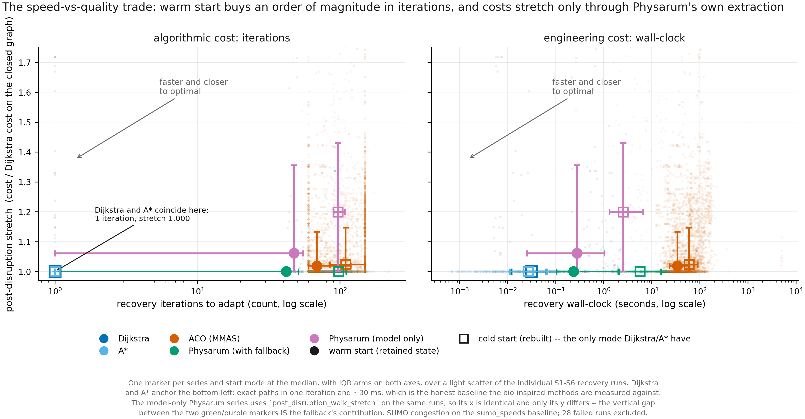
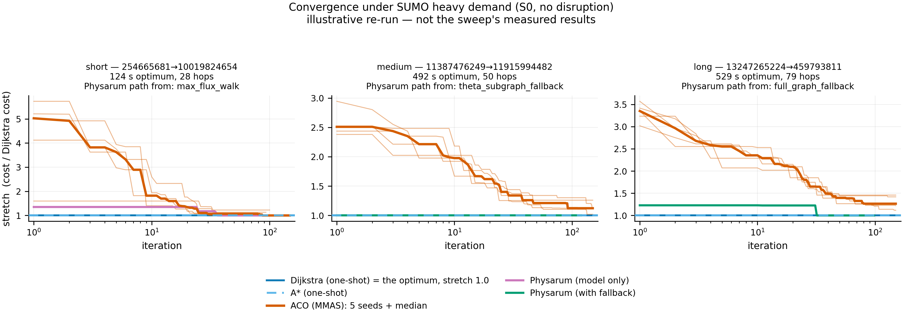
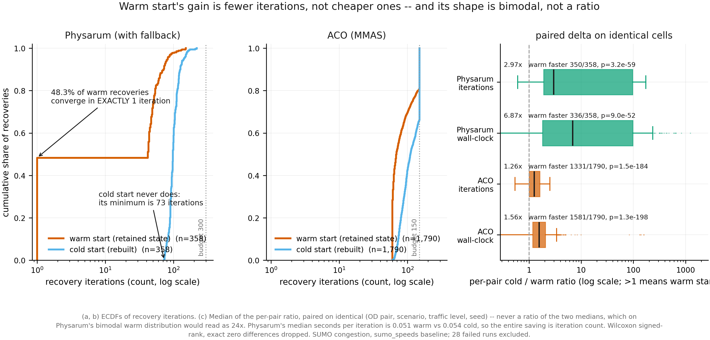
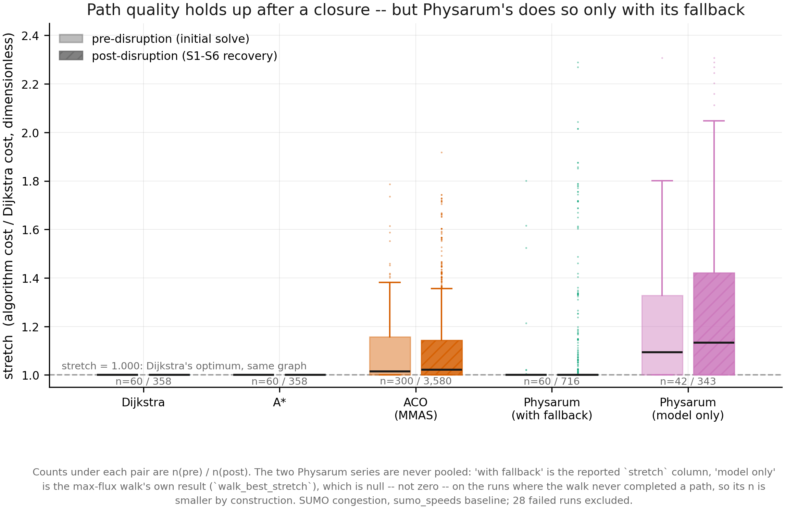
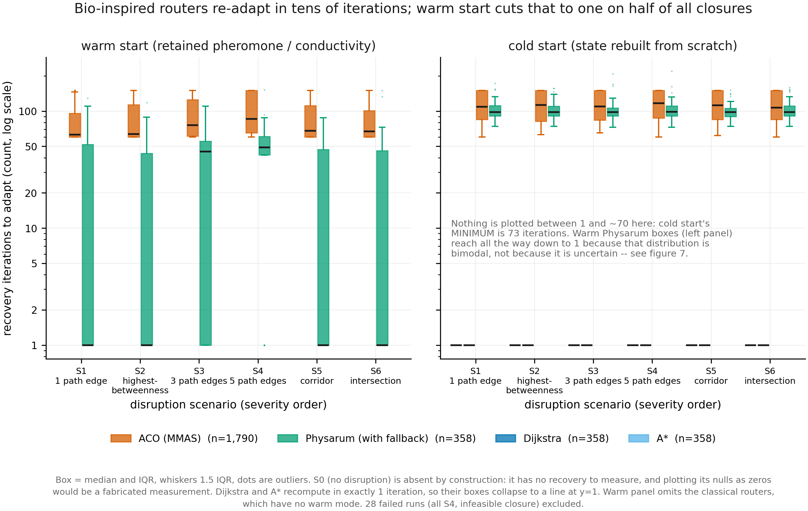
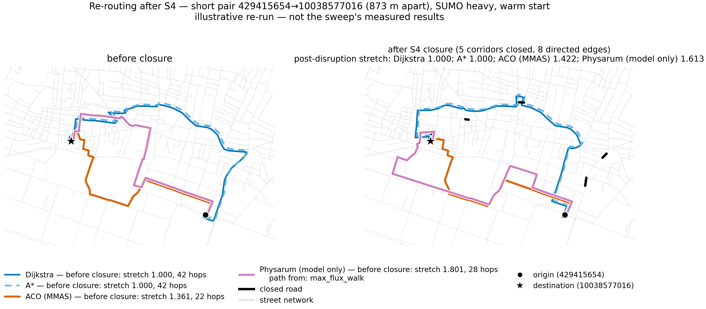
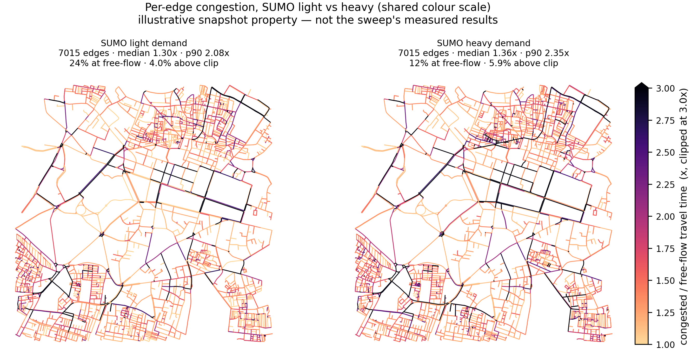

A three-way benchmark of Dijkstra/A*, Ant Colony Optimization and a Physarum polycephalum tube-reinforcement model, routing over 7,015 real road segments in central Bengaluru under SUMO-simulated traffic — measuring both path quality and how fast each method recovers when roads close.
Dijkstra wins on wall-clock, and that is reported rather than hidden. Recomputing a shortest path on a 2,856-node graph takes about 30 ms; the bio-inspired methods take seconds. The defensible question is not who is faster in milliseconds but how many adaptation iterations a method needs to absorb a closure, and what path quality it gives up getting there.
Pick an origin-destination pair and a closure scenario. The map draws the route each algorithm actually chose, before and after the roads close. Node labels are OpenStreetMap identifiers; costs are travel-time seconds on the congested graph.
Figures 2, 3, 4 and 7 are computed from the results file. Figures 1, 5 and 6 are regenerated under the same config, graph, snapshots and seeds, because the results file stores path lengths but not paths and carries no per-iteration traces; that regeneration reproduced 64 of 64 cross-checked values exactly. Every caption in the figures says which kind it is.







Stretch is an algorithm's path cost divided by Dijkstra's on the same weighted graph, so 1.000 is optimal and anything below it is a bug. Physarum appears as two separate series and is never pooled — the next table says why.
The model extracts a path by walking the maximum-flux tube. When that
walk dead-ends it falls back — and full_graph_fallback is plain
Dijkstra. Median stretch is exactly 1.000 in all three classes, so a pooled Physarum
number cannot separate "the model found the optimum" from "the fallback handed back
Dijkstra's own answer". The exact-match shares can.
Warm start keeps the pheromone or conductivity field from before the closure; cold start rebuilds it. Dijkstra and A* have only one mode.
Those are raw medians. The comparison that counts is paired on identical (OD pair, scenario, traffic level, seed) tuples, since the sweep is paired by construction. A ratio above 1 means warm start won; lower is better on every metric here. The last column is a coverage warning, and it matters on the model-only row: the warm walk completes a path on far fewer cells than the cold walk, so comparing their unpaired medians reverses the sign of the effect.
Warm start's gain is fewer iterations, not cheaper ones. Physarum's median cost per iteration is essentially identical warm and cold, so the saving is entirely in iteration count. Its warm recovery distribution is bimodal, which makes the ratio of the two medians invalid; the paired per-cell ratio is the honest statistic. Nearly half of warm recoveries finish in a single iteration, which cold start never does.
Closures are drawn relative to each pair's own optimal path and must leave origin and destination connected. How often a candidate closure had to be rejected is itself a result: single closures are nearly always survivable, but fragility grows faster than the number of simultaneous closures, and one whole corridor is safer than five scattered edges because a single detour routes around all of it.
Paired on the same OD pair and seed, light against heavy. The answer depends on the congestion model, not on the algorithm. Under analytic BPR, congestion flattens the cost surface and helps ACO. Under SUMO, measured here, it hurts: 81.3% of solves land within 10% of optimal under light demand against 58.0% under heavy. Any claim about behaviour "under congestion" has to name which model produced it.
Failures are recorded, never dropped. All of them share one cause and one scenario: two cells where five simultaneous path closures could not be drawn without disconnecting origin from destination. That is the fragility result rather than a defect — the rejection rate for candidate closures rises from 2.6% for one path edge to 14.5% for three and 31.7% for five, far faster than linearly, while a whole closed corridor sits at 7.4% because one detour routes around all of it.